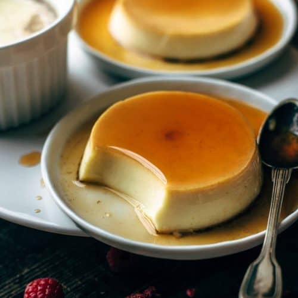

Flan de Galletas Ricanela
Flan de Galletas Ricanela

Ingredients
- Huevos
- vanilla
- condensed milk
- Galletas Ricanela
- Milk
- Evaporated milk
- Sugar
Prep Time
Around 60 minutes
Directions
- First, start of by blending and crusing a back of ricanelas until you get sugar crumb form, then place aside
- Start off with 5 eggs, make sure they are at room temp. Put into blender
- One can of evaporated milk(16oz),1 can of condensed milk, add both two blender
- next, get two cups of whole milk and to blender.
- add tablespoons of vanilla extract and add to blender.
- Blend, and make sure texture is nice and smooth. Strain it and put back in blender.
- add Ricanela crumbs to blender, and blend again
- Preheat oven to 420 degrees, and while oven is heating up. work on caramel sauce
- on a pan, add 1 cup of sugar and melt till its lightly golden. Make sure not to over cook.
- add caramel sauce to baking container and spread all around.Let it cool!!
- once caramel is cooled, add flan mixture. Next on a bigger size pan, add 3 cups of water and then place flan container inside that pan.
- Throw inside oven and cook for 45-60 minutes. After cooked, let it cool for a few hours and refrigerate. Once chilled, its ready to eat.
- Make sure to put flan upside down on a different container, and now its ready to eat.